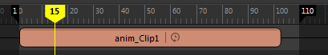

使用时间扭曲可以在不修改片段动画曲线的情况下更改片段的计时。通常，您将使用时间扭曲反转片段中的动画，或者缓入或缓出片段的动画。为片段创建时间扭曲时，时间扭曲曲线将添加到片段层次中片段的上方，片段上将显示绿色条。请参见时间扭曲。您可以对时间扭曲曲线进行操纵，调节时间扭曲对动画片段中动画的影响方式。
有关时间扭曲的说明，请参见场景时间扭曲效果。
为片段创建时间扭曲
- 在要创建时间扭曲的片段上单击鼠标右键，然后从时间编辑器片段(Clip)上下文菜单中选择。
将打开曲线图编辑器，且时间编辑器中的片段名称旁边将显示 。在曲线图编辑器中编辑时间扭曲曲线。时间扭曲曲线将显示为紫色。
- 一旦激活“时间扭曲”(Time Warp)选项，即会在片段(Clip)上下文菜单中激活“时间扭曲”(Time Warp)选项。有关时间扭曲选项的描述，请参见片段(Clip)上下文菜单的“重定时”(Retime)区域。
编辑时间扭曲
- 选择有时间扭曲的片段。
- 在“时间编辑器”(Time Editor)工具栏中，单击“曲线图编辑器”(Graph Editor) 按钮以切换到“曲线图编辑器”(Graph Editor)。有关可用于编辑曲线的选项的信息，请参见“曲线图编辑器”(Graph Editor)。
- 在“曲线图编辑器”(Graph Editor)大纲视图中，选择时间扭曲并单击“框显全部”(Frame All)
 按钮或按 f 框显时间扭曲曲线。
按钮或按 f 框显时间扭曲曲线。
- 在图表视图中，使用“插入关键帧工具”(Insert Keys Tool)插入关键帧并使用“移动工具”(Move Tool)调整曲线。
在曲线图视图中借助这些工具进行工作时，请使用鼠标中键。
若要撤消对时间扭曲曲线的编辑，请执行以下操作：
在“曲线图编辑器”(Graph Editor)中，单击 Ctrl-Z 撤消上一次更改。
若要将时间扭曲曲线恢复为原始曲线，请执行以下操作：
在时间编辑器中，单击鼠标右键，然后从片段上下文菜单中选择“重置“(Reset)。
若要从片段中移除时间扭曲曲线，请执行以下操作：
在时间编辑器中，单击鼠标右键，然后从片段上下文菜单中选择“删除“(Delete)。